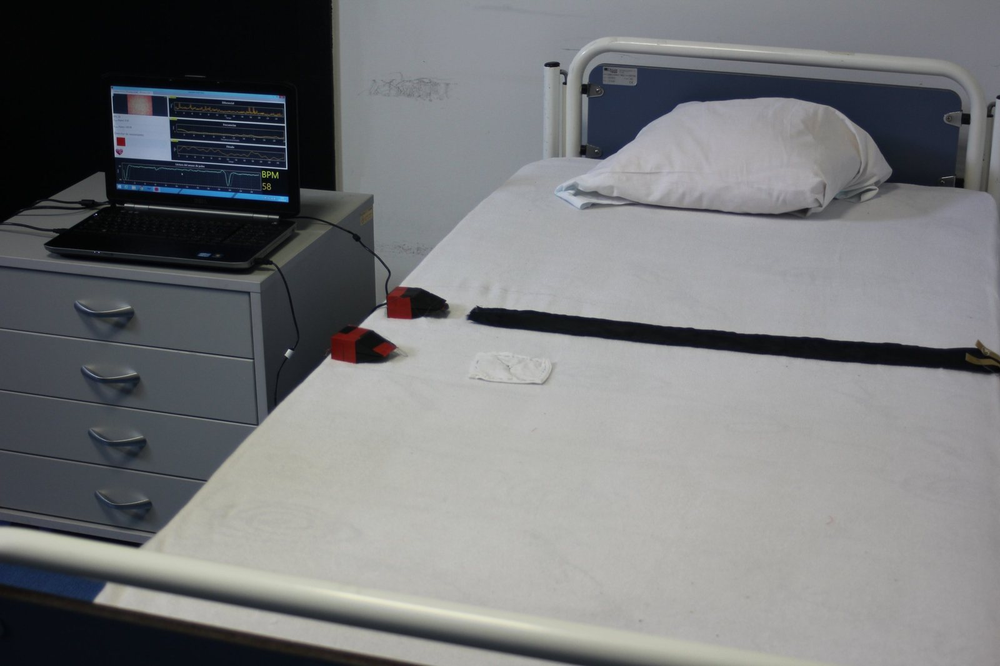
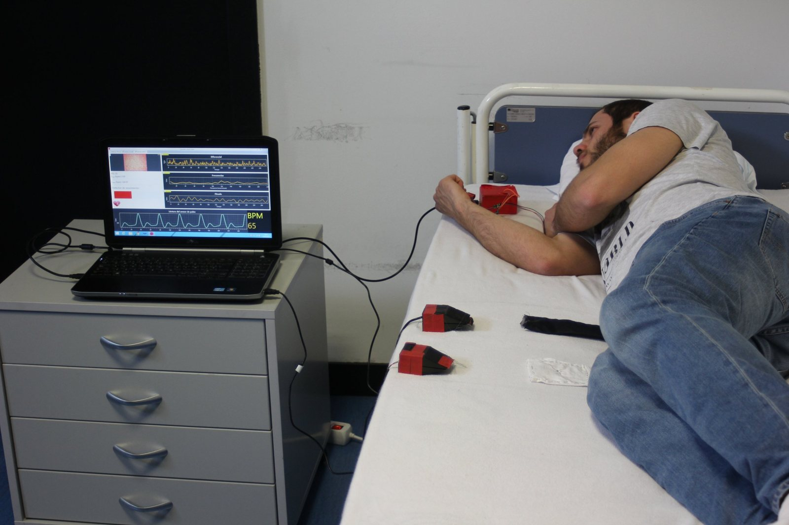
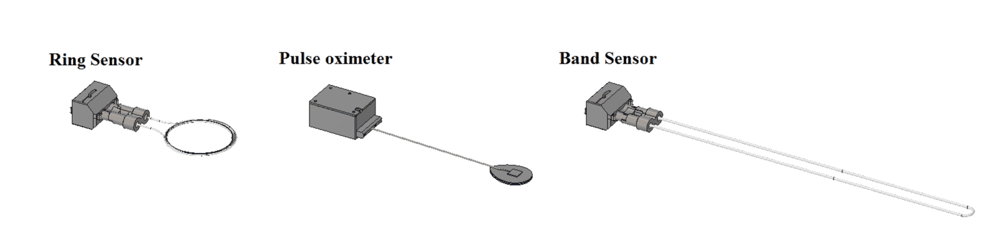
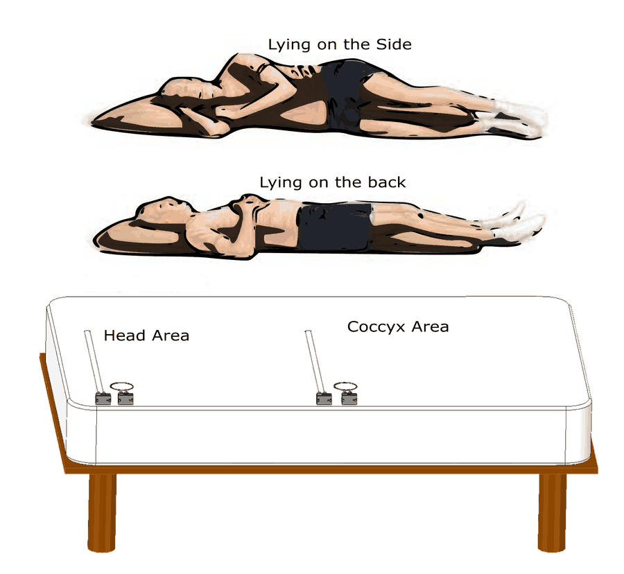
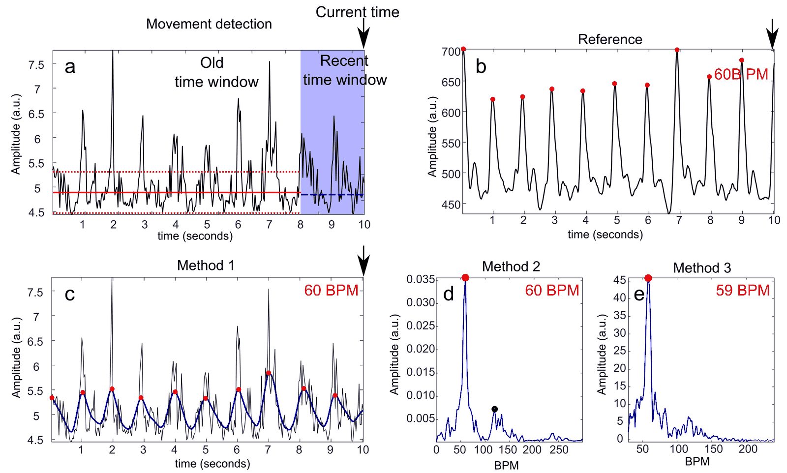
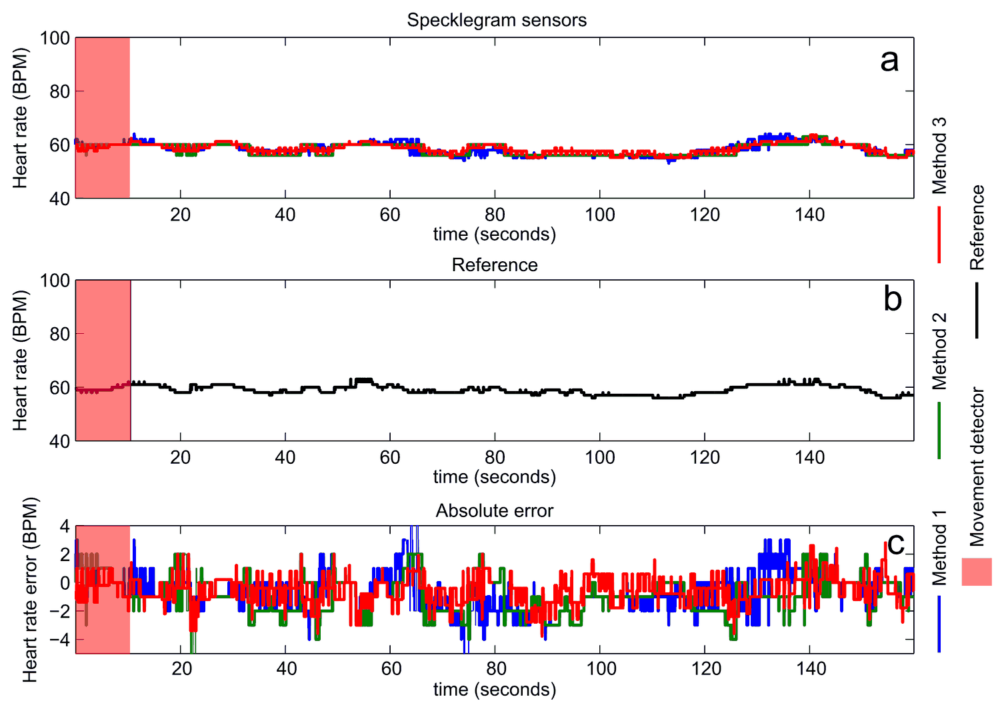
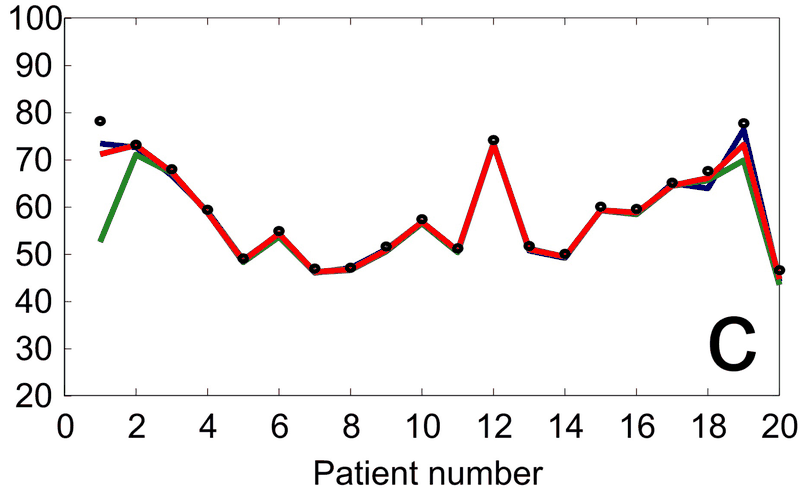
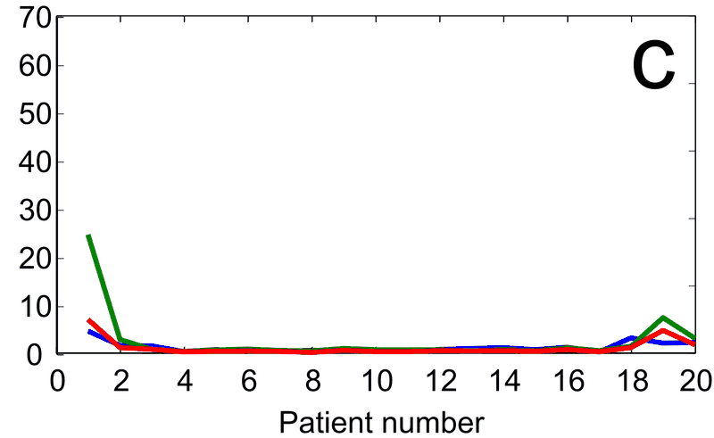
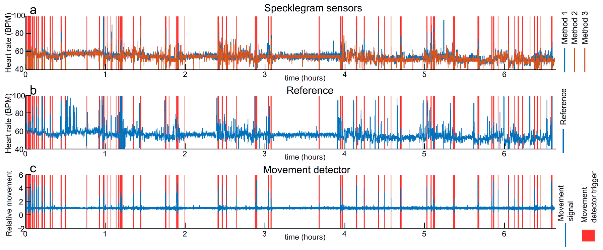
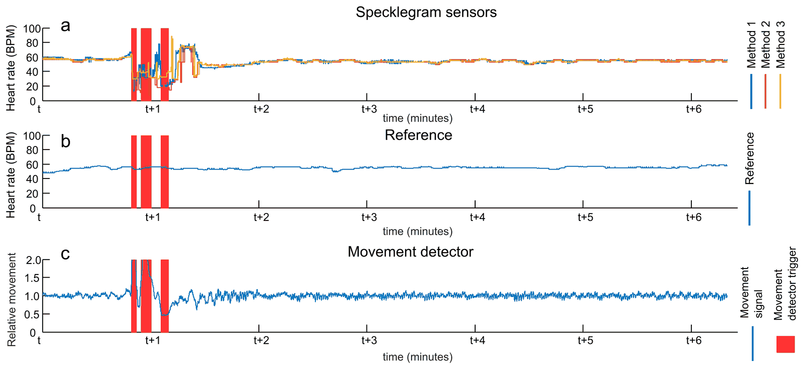

Low-cost fibre specklegram sensor for noncontact continuous patient monitoring
A plastic optical fibre sewn into a strip of cotton and laid under the pillow. Each heartbeat shakes the head a tiny amount, the fibre bends, and the speckle pattern at its end shifts. A camera and a few lines of signal processing turn that into heart rate and movement, with nothing attached to the patient.
Journal of Biomedical Optics 22(3), 037001 (2017) · Open access
Why not just a pulse oximeter?
Round-the-clock monitoring of vital signs is usually reserved for intensive care. On an ordinary ward, nurses check patients a few times a day, and deterioration between rounds can go unnoticed. Continuous monitoring catches it earlier, especially for heart problems, but the usual sensors have to be stuck to the skin: they limit how the patient moves, they are uncomfortable for days on end, and they come off every time the patient has to be moved.
Noncontact alternatives exist, from ballistocardiography and capacitive electrocardiograms to thermal cameras and photoplethysmography imaging. Optical fibres add something the others lack: no electronics near the patient, so they work even inside an MRI scanner. Among fibre techniques, the specklegram is the most sensitive for the price. This work asks how to make it a practical bed sensor: which fibre arrangement, where to put it, and how to get a reliable heart rate out of it.
From a bent fibre to a number
Coherent light travelling through a multimode fibre takes many paths at once, the modes, each with a slightly different speed. At the far end they interfere and project a grainy pattern of bright and dark spots, the specklegram. A tiny bend of the fibre changes how light is shared among the modes, and the spots rearrange.
The sensor does not try to interpret the pattern. It only asks how much it changed from one frame to the next: the sum of the absolute pixel differences between consecutive frames, averaged over the image.
N × M is the image size and K the full scale of the camera, 255 for 8-bit images. The total light stays the same, so ΔID measures how much power moved between speckles.
Five consecutive specklegrams recorded with the bed sensor, and the change between each pair, from Fig. 1 of the paper. Select a pair to compare its two frames.
One number per frame, thirty times a second. When the person is still, ΔID hovers around a baseline and jumps with every heartbeat, as the pulse moves the body against the mattress. When the person moves, it jumps far higher.
The sensors
Everything is off-the-shelf: a 638 nm semiconductor laser, 2 m of plastic optical fibre with a 240 µm core, and a CCD camera at 30 frames per second, all controlled by a laptop. The laser and the camera sit in small 3D-printed boxes at the edge of the bed. Cores of 50, 240 and 980 µm were tried, and 240 µm gave the best sensitivity.




Getting there took trial and error. The fibre was tried bare, on thin wooden boards, on silicone, soft plastics and several textiles, and in ring, helix and straight layouts. Cotton won: it transmits the pressure to the fibre and protects it, and the result is soft enough to go unnoticed under a sheet.
Three ways to count a heartbeat
All three methods work on the last ten seconds of ΔID, about 300 values, smoothed with a 10-point moving average, and give a new heart rate at every frame. Before any of them runs, a movement detector decides whether the signal can be trusted.
Signal quality stands in for what changed between configurations: a band under the head gives clean beats, a sensor under the coccyx picks up breathing and abdominal motion too.
Movement detector
The 10 s buffer is split in two: the most recent 20 % and the older 80 %. The detector compares the mean of each. With the patient still, the ratio stays close to 1; when they move, the recent part jumps and the ratio with it. Beyond a threshold, 10 % in the paper’s example, the frame is flagged and the heart rate is held until the signal is clean again.
Method 1, peaks
Smooth the signal until each beat is a single hump, find the humps, and take the median time between them, Tm. The heart rate is 60/Tm. The median ignores the odd missed or extra peak.
Method 2, FFT
Differentiate to remove the slowly drifting baseline, smooth, and take the Fourier transform. The frequency with the largest amplitude is the heart rate.
Method 3, sinusoids
Compare the signal with stored sinusoids from 0.33 Hz (20 BPM) to 4 Hz (240 BPM). The one that matches best gives the heart rate. Robust, but more than a hundred times slower than the others.
The same steps on a real recording (Fig. 4 of the paper)

Ten seconds of a real measurement. The three methods give 60, 60 and 59 BPM; the pulse oximeter, 60 BPM.
Twenty volunteers, two sensors, four positions
Twenty healthy volunteers lay on the bed after giving informed consent, with the study approved by the University of Cantabria ethics committee. Each did four recordings of 160 s with each sensor: under the head and under the coccyx, on the back and on the side. A conventional pulse oximeter held between thumb and index finger gave the reference, and an observer noted every movement.

Explore every configuration
Mean heart rate per volunteer, BPM

Mean absolute error per volunteer, BPM

All configurations at once
Share of the time each method was more than 10 % away from the reference, Table 1 of the paper. Darker is worse. Select a cell to open that configuration above.
The head wins clearly. The coccyx is closer to the heart and its signal is strong, but it also carries breathing and abdominal motion, which the methods mistake for beats. Under the head that motion is filtered by the body, and the pulsation of the brain itself may help. Lying on the side beats lying on the back, and the band, a straight stretched fibre, generally beats the ring. Among the methods, the simplest is the best: peak detection is the most accurate and the fastest, and the sinusoid match is close behind with the band. The best configuration stays within 10 % of the reference more than 97 % of the time.
A practical bonus of the winner: a soft strip under the pillow is out of the way of fluids, scratches and the patient, and nobody has to remember it is there.
A night’s sleep
Short, controlled recordings are one thing; a night in bed is another. The band sensor under the head recorded a volunteer sleeping in real conditions, turning over whenever they liked, for more than six hours.


Red bands are the moments the movement detector flagged. Between them, the specklegram estimates stay in the same band as the pulse oximeter, around 55 BPM, all night.
Over the whole night the mean error stays below 6 BPM, about 10 %. The time with more than 10 % error rises to about a fifth, largely because of the movements themselves and the changes of position they leave behind. The movements themselves show up clearly in the signal, which is useful information on its own.
Cite and credits
A. Rodríguez-Cuevas, E. Real Peña, L. Rodríguez-Cobo, M. Lomer and J. M. López-Higuera, “Low-cost fiber specklegram sensor for noncontact continuous patient monitoring”, Journal of Biomedical Optics 22(3), 037001 (2017). doi:10.1117/1.JBO.22.3.037001
@article{RodriguezCuevas2017,
author = {Rodr{\'i}guez-Cuevas, Alberto and Real Pe{\~n}a, Eusebio and
Rodr{\'i}guez-Cobo, Luis and Lomer, Mat{\'i}as and
L{\'o}pez-Higuera, Jos{\'e} Miguel},
title = {Low-cost fiber specklegram sensor for noncontact
continuous patient monitoring},
journal = {Journal of Biomedical Optics},
volume = {22},
number = {3},
pages = {037001},
year = {2017},
doi = {10.1117/1.JBO.22.3.037001}
}Authors, at the time of the work
- Alberto Rodríguez-CuevasGrupo de Ingeniería Fotónica, Universidad de Cantabria, Santander
- Eusebio Real PeñaGrupo de Ingeniería Fotónica, Universidad de Cantabria, Santander
- Luis Rodríguez-CoboGrupo de Ingeniería Fotónica, Universidad de Cantabria; CIBER-BBN
- Matías LomerGrupo de Ingeniería Fotónica, Universidad de Cantabria; CIBER-BBN
- José Miguel López-HigueraGrupo de Ingeniería Fotónica, Universidad de Cantabria; CIBER-BBN; IDIVAL
Supported by the Spanish Ministry of Economy and Competitiveness through projects TEC2013-47264-C2-1-R and TEC2016-76021-C2-2-R.